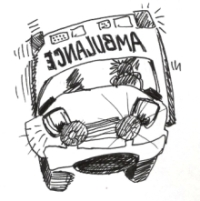

Please click on the "Usage" link next to each definition to see examples of how to use these medical terms.言葉の右にリンクしているボタンをクリックすると、医学用語を使う場面が出てきます。
What's new in American Health Field 米国健康事情

【あ ア】
足の裏 sole あしのうら Usage ga01
足の爪 toenail あしのつめ ga01
足の背 back of a foot あしのせ ga01
足の小指 baby toe あしのこゆび ga01
足の専門医 podiatrist あしのせんもんい ga01
足がむくむ Legs get swollen あしがむくむ ji01
足がつる a cramp in the leg あしがつる ki01 hu02
アキレス腱 achilles tendon アキレスけん shi02
朝のこわばり morning stiffness あさのこわばり ka03
あざ 打ち身 bruise あざ うちみ ne01
顎 jaw あご ha01
アレルギー allergy a01
アレルゲン（アレルギーを引き起こす物質） allergen a01
アレルギー体質 allergic constitution アレルギーたいしつ hi03
アレルギー反応 allergic reaction アレルギーはんのう hi01
（〜に）アレルギー（である） be allergic (to) hi03 ga02
アレルギー性鼻炎 allergic rhinitis アレルギーせいびえん ku02
アレルギーの際の頭痛 sinus headache アレルギーのさいのずつう he01
アレルギー性結膜炎 allergic conjunctivitis アレルギーせいけつまくえん mo01
アンタイオキシダンツ（酸化防止剤） antioxidants （さんかぼうしざい） a03
甘い sweet あまい go01
甘党 a sweet tooth あまとう to01
アロエ汁 aloe sap アロエじる ya01
アルコール中毒 alcoholism アルコールちゅうどく a02
アルコール中毒者 alcoholics アルコールちゅうどくしゃ a02
アルコール依存症 alcohol dependence アルコールいぞんしょう a02
アルツハイマー病 Alzheimer’s disease アルツハイマーびょう a04 ke01
悪性腫瘍 malignant tumor あくせいしゅよう i01
【い イ】
痛み止め薬 pain killer, pain medicine, pain reliever いためどめぐすり i02 chi02
胃の痛み stomach pain, sore stomach いのいたみ i01
胃潰瘍 gastric ulcer いかいよう i01 chi02 py01
胃十二指腸潰瘍 gastroduodenal ulcer いじゅうにしちょうかいよう i01
胃拡張 gastric dilatation いかくちょう i01
胃カメラ gastro-camera いカメラ i01
胃炎 gastritis いえん i01 py01
胃癌 stomach cancer いガン i01
胃酸 stomach acid いさん i01 hu01
胃腸病学 gastroenterology いちょうびょうがく hu01
胃腸病専門医 gastroenterologist いちょうびょうせんもんい hu01 su01
遺伝体質 hereditary いでんたいしつ i01
遺伝する inherit, inherited いでんする to01
遺伝子検査 gene testing いでんしけんさ ni02
インシュリン insulin to01
インフルエンザ influenza ha03
インフルエンザ（B型） Hemophilus influenzae B（Bがた） i03
医療費 medical cost いりょうひ sa01
医療保険 medical insurance いりょうほけん sa01
医療材料費（請求書に記載の） MED-SUR SUPPLIES i04
いりょうざいりょうひ（せいきゅうしょにきさいの）
医療請求書 statement, medical bills いりょうせいきゅうしょ i04
医療保険支払額 insurance payment いりょうほけんしはらいがく i04
医療器具 medical device, medical equipment いりょうきぐ yo01
活き活きとしている being active いきいきとしている chi03
いらいらする irritated u01
入れ歯 denture いれば ke01
移植 transplantation いしょく bi01
息切れ（る） shortness of breath (be out of breath) いきぎれ（る） ki02 su03
いびき snoring su02
いびきをかく snore su02
意識 consciousness いしき sa01 ku03
意識を失う lose consciousness いしきをうしなう ku03
意識不明である being unconscious いしきふめいである sa01
居眠り運転 riving while dozing いねむりうんてん a02
痛む 痛める hurt いたむ いためる shi02
【う ウ】
ウイルス性炎症 viral inflammation ウイルスせいえんしょう vi01
ウイルス性感染 viral infection ウイルスせいかんせん vi01
ウイルス性めまい viral vertigo ウイルスせいめまい vi01
ウイルス（ヴァイラス） virus mi02
うがい（する） gargle ku02
うずく throb with pain i02
魚の目 warts うおのめ ga01
打ち身・あざ bruise うちみ ne01
運動 exercise うんどう to01 a04
運動療法 physical therapy うんどうりょうほう ka03
運動を続ける continue exercise うんどうをつづける chi03
うるさい音 loud noise うるさいおと ro01
鬱病 depression うつびょう u01
【え エ】
遠視 farsightedness, metropia えんし ke03
栄養のバランス nutritional balance えいようのバランス a03
栄養 nutrition えいよう e02
炎症 inflammation えんしょう chi02
円形脱毛症 alopecia areata えんけいだつもうしょう ha02
HIV (Human Immuno-deficiency Virus) ヒト免疫不全ウイルス me02
エボラウイルス Ebola virus e01
エボラ流行・突発 Ebola epidemics, outbreak エボラりゅうこう・とっぱつ e01
エイズ (後天性免疫不全症候群） AIDS (Acquired Immune Deficiency Syndrome)
こうてんせい めんえき ふぜん しょうこうぐん e01 me02
【お オ】
お年寄り elderly people, senior citizens おとしより ke01
お腹（口語） tummy おなか be01 shi03 hu01 su01
おへそ(口語) belly button shi03
応急手当をする give first aid おうきゅうてあてをする ka02
応急手当 first aid おうきゅうてあて ga01 ya01
嘔吐する vomit おうとする su01
嘔吐 vomiting おうと shi09
悪寒 寒気 chill おかん さむけ ka01
温湿布 hot pack, warm compress おんしっぷ ne01 mo01
奥歯 molar(s)/a back tooth, back teeth おくば i02
音波 sound wave おんぱ chi04
【か カ】
風邪 (a) cold かぜ ka01 ha03
風邪をひく catch a cold かぜをひく ka01 ha03
家庭常備薬 household medicine かていじょうびやく ka02 shi01
風邪薬 cold medicine かぜぐすり ka01 ku02 ha03 shi01
風邪用、咳用、インフルエンザ用薬 drugs for cold, for cough, for influenza
かぜよう、せきよう、インフルエンザようくすり ku02
過敏症 hypersensitivity かびんしょう ku01
華氏 Fahrenheit かし ga02 ne02
肝臓 liver かんぞう a02
肝硬変 liver cirrhosis かんこうへん a02
肝炎（B型） hepatitis B かんえん（Bがた） i03
家庭内暴力 domestic violence かていないぼうりょく a02
空咳 dry cough からぜき ha03 ta01
身体の痛み body ache からだのいたみ su01 f01
潰瘍 ulcer かいよう hu01
空っぽの胃 empty stomach からっぽのい di01
過摂食障害 binge eating disorder かせっしょくしょうがい di01
過食 bulimia かしょく di01
化学肥料 chemical fertilizer かがくひりょう e02
カロリー calories e02 di01
緩下剤 laxative(s) かんげざい be01
浣腸 enema かんちょう be01 ki03
感染源 source of infections かんせんげん shi07
感染経路 infection route かんせんけいろ shi07
感染 infection かんせん shi07 mi01
隔離 quarantine, isolation かくり e01 shi07
片麻痺 hemiparalysis かたまひ ku03
下半身不随 paralyzed from the waist down かはんしんふずい shi06
顔のぶつぶつ rash on one’s face かおのぶつぶつ shi03
かぶれ skin rash hi01
花粉症 allergic rhinitis, pollen allergy かふんしょう hi03
痒い itchy かゆい shi08
かゆみ itching hi01 hi03
化膿 suppuration かのう mi01
かさぶた形成 crusting かざぶたけいせい a01
かさぶた scab mi02
疥癬 scabies かいせん shi08
掻く scratch かく shi08
かかと heel ga01
肩 shoulder かた ka03 chi04
肩関節周囲炎 periarthritis of the shoulder かたかんせつしゅういえん go02
下部腰痛 lower back pain かぶようつう yo01
関節 joint(s) かんせつ ka03 chi04
関節炎 arthritis かんせつえん ka03 ke01
関節の痛み joint ache, arthralgia かんせつのいたみ ka03
関節のこわばり joint stiffness かんせつのこわばり ka03
関節の腫れ joint swelling かんせつのはれ ka03
患者 patient(s) かんじゃ ga02
患者氏名 name of patient かんじゃしめい ga02
家族歴 family history かぞくれき ni02
【が ガ】
外来手続き outpatient registration がいらいてつづき ga02
癌の予防 cancer prevention がんのよぼう a03
合併症 complications がっぺいしょう to01
外反母趾 hallux valgus がいはんぼし ga01
外耳 outer ear がいじ mi01
眼科医 ophthalmologist がんかい ke03 mo01
眼球 eyeball がんきゅう mo01
眼帯 eye patch がんたい mo01
眼内圧 intraocular pressure がんないあつ ri01
【き キ】
救急車 ambulance きゅうきゅうしゃ sa01
救急室 emergency room きゅうきゅうしつ sa01 ki03
救急箱 a first-aid kit (box) きゅうきゅうばこ ka02
禁忌 contraindications きんき ku01
切り傷 a cut きりきず ka02
胸痛 chest pain きょうつう ki02
虚血性心臓病 ischemic heart disease きょけつせいしんぞうびょう ki02
狭窄 stenosis, constriction きょうさく ro01
狭心症 angina pectoris きょうしんしょう ki02
急性期 acute stage きゅうせいき go02
急性胃炎 acute gastritis きゅうせいいえん i01
急性アルコール中毒 acute alcoholic intoxication, alcoholic poisoning
きゅうせいアルコールちゅうどく a02
気管支炎 bronchitis きかんしえん ha03
揮発性の物質 volatile substance きはつせいのぶっしつ go01
嗅覚 the sense of smell きゅうかく go01
近視 nearsightedness, myopia きんし ke03
興味を持つ be interested in きょうみをもつ a04
共鳴（する） synchronize きょうめいする ro01
拒食症 anorexia nervosa きょしょくしょう di01
競争の激しい仕事 competitive jobs きょうそうのはげしいしごと bi01
禁煙車 non-smoking car きんえんしゃ ta01
禁煙 smoking cessation きんえん ta01
禁煙する give up smoking, quit smoking きんえんする ta01
禁断症状 withdrawal symptoms きんだんしょうじょう ta01
筋、筋肉 muscle きん、きんにく ki01 hi02 go02
筋肉痛 muscle ache, muscle pain きんにくつう ki01 f01
筋肉質の人 muscular type, muscular person きんにくしつのひと hi02
筋ジストロフィー muscular dystrophy きんジストロフィー ki01
筋無力症 amyosthenia, myasthenia きんむりょくしょう ki01
筋萎縮症 amyotrophy きんいしゅくしょう ki01
急性発疹性伝染病 acute eruptive infectious (contagious) disease
きゅうせいほっしんせいでんせんびょう mi02
【ぎ ギ】
義歯 a false tooth, false teeth ぎし ke01
義手 artificial arm ぎしゅ shi06
義足 artificial leg ぎそく shi06
ギプス plaster cast ne01
ぎっくり腰 herniated lumbar disk (strained back) ぎっくりごし hu02
【く ク】
くしゃみ sneeze, sneezing ku02 ka01
薬 drug, medicine くすり ku01 ka02 i02 shi01 ga02
薬の相互作用 drug interactions くすりのそうごさよう ku01
くも膜下出血 subarachnoid hemorrhage くもまくかしゅっけつ ku03
唇がかさつく Lips become chapped くちびるがかさつく ji01
口内外のただれ(幼児の) thrush こうないがいのただれ（ようじの） ko01
空腹 hunger くうふく di01
くじく・捻挫 sprain ねんざ ne01
車椅子 wheelchair くるまいす ke01 shi06
首のサポーター neck brace くびのサポーター hu02
首 neck くび ha01
【ぐ グ】
ぐったり limp ne02
ぐったりして元気がない listless ぐったりしてげんきがない shi03
グループで治療に当たるアプローチ multi-disciplinary approarch
グループでちりょうにあたるアプローチ yo01
グレーブス病 Graves’ disease グレープスびょう ho02
【け ケ】
健康食品 heath food けんこうしょうくひん e02
健康診断 a (physical) check up けんこうしんだん ke02 ke04
健康保険証 health insurance けんこうほけんしょう ga02 sa01 i04
検査(請求書に記載の) LAB けんさ（せいきゅうしょにきさいの） i04
検査 test(s) けんさ ki03
検眼 optometry けんがん ke03
検眼医 optometrist けんがんい ke03
結膜炎 conjunctivitis けつまくえん mo01
血圧 blood pressure けつあつ he01 ga02
血液検査 a blood test けつえきけんさ ke02 ki03
血液病 blood vessel けつえきびょう ke02
血小板 platelet けっしょうばん ke02
血管 blood disease けっかん ku03
血流 blood flow けつりゅう chi04
血行 blood flow けっこう ro01
血痰 bloody phlegm(sputum) けったん ha03 ta01
血便 blood in the stool けつべん shi03
血尿 blood in urine けつにょう ji02
痙攣 convulsion けいれん ki01 sa01
痙攣(ピクピクと) twitch けいれん ki01
痙攣（こむら返り ） cramp けいれん（こむらがえり） ki01
痙攣(急激な筋れん縮) spasm けいれん（きゅうげきなきんれんしゅく） ki01
痙攣(発作、癲癇発作) seizure けいれん（ほっさ、てんかんほっさ） ha01
倦怠感 general weakness, malaise けんたいかん ka01
健忘症 forgetfulness けんぼうしょう ke01 a04
腱 tendon けん shi02
ケロイド keloid, scar ya01
腱鞘炎 tendonitis けんしょうえん shi02
形成外科 plastic surgery けいせいげか bi01
肩甲骨 shoulder blade, scapula けんこうこつ go02
健康器具 therapeutic equipment けんこうきぐ yo01
【げ ゲ】
激痛 sharp pain げきつう ki02
解熱剤 fever medicine げねつざい ka02 shi01
下痢 diarrhea, the runs げり su01 shi03 e01
下痢止め antidiarrheic, binding medicine げりどめ ka02
幻覚症状 hallucination げんかくしょうじょう a02
外科病棟 surgical ward げかびょうとう ki03
外科医 surgeon げかい yo01
【こ コ】
穀類 grains こくるい e02
粉ミルク powdered milk こなミルク ni01
口腔外科 oral surgery こうくうげか ko01
口腔外科医 oral surgeon こうくうげかい ko01
口内炎 stomatitis こうないえん ko01
口内外のただれ thrush こうないがいのただれ ko01
口内の痛いブツブツ（点々） cold sores こうないのいたいブツブツ（てんてん） ko01
紅斑 erythema こうはん a01
抗ヒスタミン剤 antihistamines, antihistamine agent, drug こうヒスタミンざい hi03
抗生物質 antibiotics こうせいぶっしつ se01 shi09
抗菌性の antibacterial こうきんせいの py01
抗原 antigen こうげん me02
抗体 antibody こうたい me02
高熱 high fever こうねつ e01
高熱(体温上昇) hyperthermia こうねつ（たいおんじょうしょう） ne02
呼吸器系 respiratory system こきゅうきけい su03
呼吸困難 dyspnea, difficulty in breathing こきゅうこんなん ki02
高血圧 hypertension こうけつあつ shi01 he01 su03 chi01
こめかみ side of the head he01
甲状腺 thyroid gland こうじょうせん ho02
甲状腺機能過多 hyperthyroidism こうじょうせんきのうかた ho02
甲状腺機能低下症 hypothyroidism こうじょうせんきのうていかしょう ho02
甲状腺ホルモン thyroid hormone こうじょうせんホルモン ho02
更年期障害 climacteric disturbance こうねんきしょうがい ko02
高齢化社会 an aging society こうれいかしゃか chi03 ro01
交通事故 traffic accident(s) こうつうじこ shi06
後遺症 aftereffects こういしょう mi02 ku03
後天性の acquired こうてんせいの shi06
拘縮 contracture こうしゅく go02
腰の痛み(腰痛) backache こしのいたみ（ようつう） chi04
腰のサポーター lumbar supporter こしのサポーター hu02
こわばり、こり stiffness ha01 f01
こわばった stiff shi02
鼓膜 eardrum こまく mi01
コンタクト contact lenses ke03
高（低）気圧 high (or low) atmospheric/barometric pressure
こう（てい）きあつ ji01
【ご ゴ】
五感 five senses ごかん go01
五十肩 frozen shoulder ごじゅうかた go02


(New) 米国健康事情 e02
Check back for new additions in the future!
| © 1995-2013 NACOS International Institute. All Rights Reserved. |